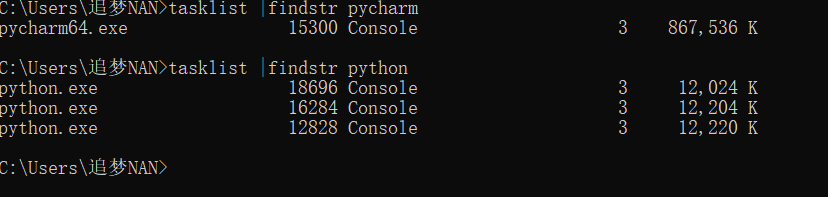
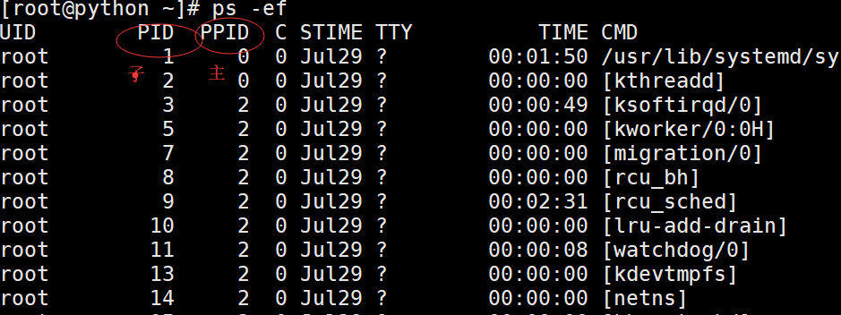
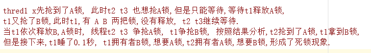
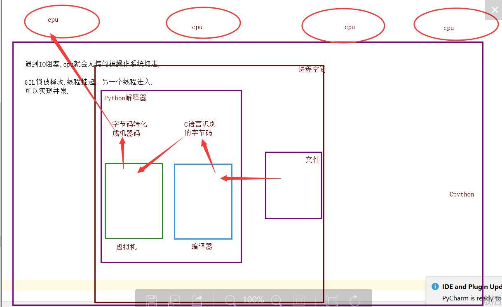
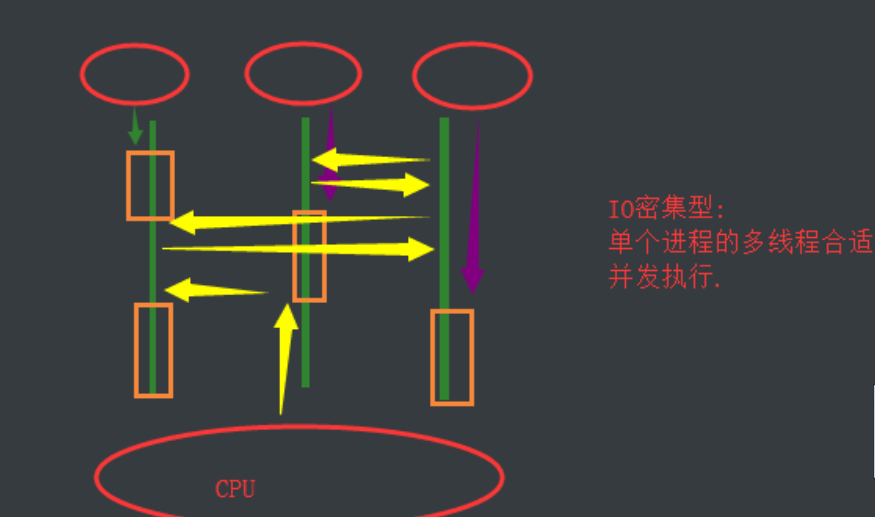
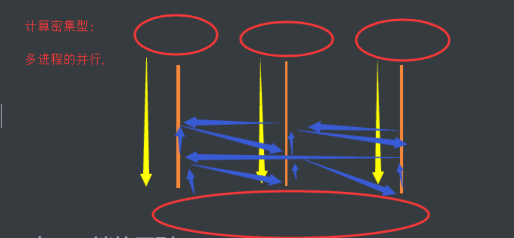

python中的多线程无法利用多核优势，如果想要充分地使用多核CPU的资源（os.cpu_count()查看），在python中大部分情况需要使用多进程。Python提供了multiprocessing。
multiprocessing模块用来开启子进程，并在子进程中执行我们定制的任务（比如函数），该模块与多线程模块threading的编程接口类似。
multiprocessing模块的功能众多：支持子进程、通信和共享数据、执行不同形式的同步，提供了Process、Queue、Pipe、Lock等组件。
需要再次强调的一点是：与线程不同，进程没有任何共享状态，进程修改的数据，改动仅限于该进程内。
创建进程的类
Process([group [, target [, name [, args [, kwargs]]]]])，由该类实例化得到的对象，表示一个子进程中的任务（尚未启动）
强调：
1. 需要使用关键字的方式来指定参数
2. args指定的为传给target函数的位置参数，是一个元组形式，必须有逗号参数介绍
group参数未使用，值始终为None
target表示调用对象，即子进程要执行的任务
args表示调用对象的位置参数元组，args=(1,2,'egon',)
kwargs表示调用对象的字典,kwargs={'name':'egon','age':18}
name为子进程的名称方法介绍
p.start()：启动进程，并调用该子进程中的p.run()
p.run():进程启动时运行的方法，正是它去调用target指定的函数，我们自定义类的类中一定要实现该方法
p.terminate():强制终止进程p，不会进行任何清理操作，如果p创建了子进程，该子进程就成了僵尸进程，使用该方法需要特别小心这种情况。如果p还保存了一个锁那么也将不会被释放，进而导致死锁
p.is_alive():如果p仍然运行，返回True
p.join([timeout]):主线程等待p终止（强调：是主线程处于等的状态，而p是处于运行的状态）。timeout是可选的超时时间，需要强调的是，p.join只能join住start开启的进程，而不能join住run开启的进程属性介绍
p.daemon：默认值为False，如果设为True，代表p为后台运行的守护进程，当p的父进程终止时，p也随之终止，并且设定为True后，p不能创建自己的新进程，必须在p.start()之前设置
p.name:进程的名称
p.pid：进程的pid
p.exitcode:进程在运行时为None、如果为–N，表示被信号N结束(了解即可)
p.authkey:进程的身份验证键,默认是由os.urandom()随机生成的32字符的字符串。这个键的用途是为涉及网络连接的底层进程间通信提供安全性，这类连接只有在具有相同的身份验证键时才能成功（了解即可）注意：在windows中Process()必须放到# if name == 'main':下
由于Windows没有fork，多处理模块启动一个新的Python进程并导入调用模块。
如果在导入时调用Process（），那么这将启动无限继承的新进程（或直到机器耗尽资源）。
这是隐藏对Process（）内部调用的原，使用if __name__ == “__main __”，这个if语句中的语句将不会在导入时被调用。方式一
from multiprocessing import Process
import time
def task(name):
print(f"{name} is running")
time.sleep(2)
print(f"{name} is gone")
if __name__ == '__main__':
#在windos中,开启进程必须在__name__ == '__main__'下面
p = Process(target=task,args=("zbb",)) #创建一个进程对象
p.start()
#只是向操作系统发出一个开辟子进程的信号,然后执行下一行
# 这个信号操作系统接收到之后,会从内存中开辟一个子进程空间,
# 然后在将主进程所有数据copy加载到子进程,然后在调用cpu去执行.
# 开辟子进程开销是很大的.
print("==主开始")
time.sleep(3)
print("主结束")
# ==主开始
# zbb is running
# zbb is gone
# 主结束方式二(了解不常用)
from multiprocessing import Process
import time
class MyProcess(Process):
def __init__(self,name):
super().__init__()
self.name = name
def run(self): #必须为run 否则会执行父类的,但是父类的为None
print(f"{self.name} is running")
time.sleep(2)
print(f"{self.name} is gone ")
if __name__ == '__main__':
p = MyProcess("zbb")
p.start()
print("==主")
# ==主
# zbb is running
# zbb is gone pid是进程在内存中唯一的标识
列如,linux中 kill pid
代码获取
from multiprocessing import Process
import os
def task(name):
print(f'子进程:{os.getpid()}')
print(f'主进程:{os.getppid()}')
if __name__ == '__main__':
p = Process(target=task,args=('zbb',)) # 创建一个进程对象
p.start()
print(f'====主{os.getpid()}')
# ====主13548
# 子进程:1832
# 主进程:13548win命令行获取pid

linux中获取

子进程和主进程在不同的空间
from multiprocessing import Process
import time
name = '追梦NAN'
def task():
global name
name = 'zbb'
print(f'子进程{name}')
if __name__ == '__main__':
p = Process(target=task) # 创建一个进程对象
p.start()
# print('==主开始')
time.sleep(3)
print(f'主:{name}')
# 子进程zbb
# 主:追梦NANjoin让主进程等待子进程结束之后,在执行主进程.
from multiprocessing import Process
import time
def task(name):
print(f'{name} is running')
time.sleep(2)
print(f'{name} is gone')
if __name__ == '__main__':
p = Process(target=task,args=('zbb',)) # 创建一个进程对象
p.start()
p.join() #
print('==主开始')多个子进程使用join
验证一
from multiprocessing import Process
import time
def task(name,sec):
print(f'{name}is running')
time.sleep(sec)
print(f'{name} is gone')
if __name__ == '__main__':
start_time = time.time()
p1 = Process(target=task,args=('1',1))
p2 = Process(target=task,args=('2',2))
p3 = Process(target=task,args=('3',3))
p1.start()
p2.start()
p3.start()
p1.join() # join只针对主进程,如果join下面多次join 他是不阻塞的.
p2.join()
p3.join()
print(f'==主{time.time()-start_time}')
# 1is running
# 2is running
# 3is running
# 1 is gone
# 2 is gone
# 3 is gone
# ==主3.186117172241211验证2
# 多个子进程使用join
from multiprocessing import Process
import time
def task(name,sec):
print(f'{name}is running')
time.sleep(sec)
print(f'{name} is gone')
if __name__ == '__main__':
start_time = time.time()
p1 = Process(target=task,args=('1',3))
p2 = Process(target=task,args=('2',2))
p3 = Process(target=task,args=('3',1))
p1.start()
p2.start()
p3.start()
p1.join() #p1就是阻塞 走完周后才走主
print(f'==主1-{time.time() - start_time}')
p2.join()
print(f'==主2-{time.time() - start_time}')
p3.join()
print(f'==主3-{time.time()-start_time}')
# 1is running
# 2is running
# 3is running
# 3 is gone
# 2 is gone
# 1 is gone
# ==主1-3.152977705001831
# ==主2-3.152977705001831
# ==主3-3.152977705001831优化上面代码
from multiprocessing import Process
import time
def task(name,sec):
print(f'{name}is running')
time.sleep(sec)
print(f'{name} is gone')
if __name__ == '__main__':
start_time = time.time()
l1 = []
for i in range(1,4):
p=Process(target=task,args=("zbb",1))
l1.append(p)
p.start()
for i in l1:
i.join()
print(f'==主{time.time() - start_time}')
print(l1)
# zbbis running
# zbbis running
# zbbis running
# zbb is gone
# zbb is gone
# zbb is gone
# ==主1.1665570735931396
# [<Process(Process-1, stopped)>, <Process(Process-2, stopped)>, <Process(Process-3, stopped)>]join就是阻塞,主进程有join,主进程下面的代码一律不执行,直到进程执行完毕之后,在执行.
from multiprocessing import Process
import time
def task(name):
print(f'{name} is running')
time.sleep(2)
print(f'{name} is gone')
if __name__ == '__main__':
p = Process(target=task,args=('cc',),name='aaa') # 创建一个进程对象
print(p.name) #给子进程起名字
p.start()
# time.sleep(1)
p.terminate() #杀死子进程
time.sleep(0.5) #先睡一会要不然判断还是活的
print(p.is_alive())#判断子进程是否存活
# p.name = 'sb' #改子进程的名字
print('==主开始')基于unix环境(linux,macOS)
正常：主进程需要等待子进程结束之后,主进程才结束
主进程时刻监测子进程的运行状态,当子进程结束之后,一段时间之内,将子进程进行回收.
为什么主进程不在子进程结束后马上对其回收呢?
1. 主进程与子进程是异步关系.主进程无法马上捕获子进程什么时候结束.
2. 如果子进程结束之后马上再内存中释放资源,主进程就没有办法监测子进程的状态了.unix针对于上面的问题,提供了一个机制.
所有的子进程结束之后,立马会释放掉文件的操作链接,内存的大部分数据,但是会保留一些内容: 进程号,结束时间,运行状态,等待主进程监测,回收.所有的子进程结束之后,在被主进程回收之前,都会进入僵尸进程状态.
一：僵尸进程（有害）
僵尸进程：一个进程使用fork创建子进程，如果子进程退出，而父进程并没有调用wait或waitpid获取子进程的状态信息，那么子进程的进程描述符仍然保存在系统中。这种进程称之为僵死进程。如果父进程不对僵尸进程进行回收(wait/waitpid),产生大量的僵尸进程,这样就会占用内存,占用进程pid号.
僵尸进程如何解决???
父进程产生了大量子进程,但是不回收,这样就会形成大量的僵尸进程,解决方式就是直接杀死父进程,将所有的僵尸进程变成孤儿进程进程,由init进行回收二：孤儿进程（无害）
孤儿进程：一个父进程退出，而它的一个或多个子进程还在运行，那么那些子进程将成为孤儿进程。孤儿进程将被init进程(进程号为1)所收养，并由init进程对它们完成状态收集工作。子进程守护着主进程,只要主进程结束,子进程跟着就结束
from multiprocessing import Process
import time
def task(name):
print(f'{name} is running')
time.sleep(2)
print(f'{name} is gone')
if __name__ == '__main__':
# 在windows环境下, 开启进程必须在 __name__ == '__main__' 下面
p = Process(target=task,args=('zb',)) # 创建一个进程对象
p.daemon = True # 将p子进程设置成守护进程,只要主进程结束,守护进程马上结束.
p.start()
time.sleep(1)
print('===主')多个用户抢占一个资源时，第一个用户先抢到了，加上锁，用完之后才给第二个用户使用
问题
三个同事 同时用一个打印机打印内容.
三个进程模拟三个同事, 输出平台模拟打印机.
#版本一:
#并发是以效率优先的,但是目前我们的需求: 顺序优先.
#多个进程共强一个资源时, 要保证顺序优先: 串行,一个一个来.
from multiprocessing import Process
import time
import random
import os
def task1(p):
print(f'{p}开始打印了')
time.sleep(random.randint(1,3))
print(f'{p}打印结束了')
def task2(p):
print(f'{p}开始打印了')
time.sleep(random.randint(1,3))
print(f'{p}打印结束了')
if __name__ == '__main__':
p1 = Process(target=task1,args=('p1',))
p2 = Process(target=task2,args=('p2',))
p2.start()
p2.join()
p1.start()
p1.join()
#我们利用join 解决串行的问题,保证了顺序优先,但是这个谁先谁后是固定的.
#这样不合理. 你在争抢同一个资源的时候,应该是先到先得,保证公平.from multiprocessing import Process
from multiprocessing import Lock
import time
import random
import os
def task1(p,lock):
'''
一把锁不能连续锁两次
'''
lock.acquire()
print(f'{p}开始打印了')
time.sleep(random.randint(1,3))
print(f'{p}打印结束了')
lock.release()
def task2(p,lock):
lock.acquire()
print(f'{p}开始打印了')
time.sleep(random.randint(1,3))
print(f'{p}打印结束了')
lock.release()
if __name__ == '__main__':
mutex = Lock()
p1 = Process(target=task1,args=('p1',mutex))
p2 = Process(target=task2,args=('p2',mutex))
p2.start()
p1.start()lock与join的区别.
共同点: 都可以把并发变成串行, 保证了顺序.
不同点: join人为设定顺序,lock让其争抢顺序,保证了公平性.# 抢票系统.
# 先可以查票.查询余票数. 并发
# 进行购买,向服务端发送请求,服务端接收请求,在后端将票数-1,返回到前端. 串行.
# 当多个进程共强一个数据时,如果要保证数据的安全,必须要串行.
# 要想让购买环节进行串行,我们必须要加锁处理.
from multiprocessing import Process
from multiprocessing import Lock
import json
import time
import os
import random
def search():
time.sleep(random.randint(1,3)) # 模拟网络延迟(查询环节)
with open('ticket.json',encoding='utf-8') as f1:
dic = json.load(f1)
print(f'{os.getpid()} 查看了票数,剩余{dic["count"]}')
def paid():
with open('ticket.json', encoding='utf-8') as f1:
dic = json.load(f1)
if dic['count'] > 0:
dic['count'] -= 1
time.sleep(random.randint(1,3)) # 模拟网络延迟(购买环节)
with open('ticket.json', encoding='utf-8',mode='w') as f1:
json.dump(dic,f1)
print(f'{os.getpid()} 购买成功')
def task(lock):
search()
lock.acquire()
paid()
lock.release()
if __name__ == '__main__':
mutex = Lock()
for i in range(6):
p = Process(target=task,args=(mutex,))
p.start()
# 当很多进程共强一个资源(数据)时, 你要保证顺序(数据的安全),一定要串行.
# 互斥锁: 可以公平性的保证顺序以及数据的安全.
# 基于文件的进程之间的通信:
# 效率低.
# 自己加锁麻烦而且很容易出现死锁.进程彼此之间互相隔离，要实现进程间通信（IPC），multiprocessing模块支持两种形式：队列和管道，这两种方式都是使用消息传递的
队列: 把队列理解成一个容器,这个容器可以承载一些数据,
队列的特性: 先进先出永远保持这个数据.
.
创建队列的类（底层就是以管道和锁定的方式实现）：
1 Queue([maxsize]):创建共享的进程队列，Queue是多进程安全的队列，可以使用Queue实现多进程之间的数据传递。 参数介绍：
1 maxsize是队列中允许最大项数，省略则无大小限制。 主要方法：
q.put方法用以插入数据到队列中，put方法还有两个可选参数：blocked和timeout。如果blocked为True（默认值），并且timeout为正值，该方法会阻塞timeout指定的时间，直到该队列有剩余的空间。如果超时，会抛出Queue.Full异常。如果blocked为False，但该Queue已满，会立即抛出Queue.Full异常q.get方法可以从队列读取并且删除一个元素。
同样，get方法有两个可选参数：blocked和timeout。如果blocked为True（默认值），并且timeout为正值，那么在等待时间内没有取到任何元素，会抛出Queue.Empty异常。
如果blocked为False，有两种情况存在，如果Queue有一个值可用，则立即返回该值，否则，如果队列为空，则立即抛出Queue.Empty异常.q.get_nowait():同q.get(False)
q.put_nowait():同q.put(False)q.empty():调用此方法时q为空则返回True，该结果不可靠，比如在返回True的过程中，如果队列中又加入了项目。
q.full()：调用此方法时q已满则返回True，该结果不可靠，比如在返回True的过程中，如果队列中的项目被取走。
9 q.qsize():返回队列中目前项目的正确数量，结果也不可靠，理由同q.empty()和q.full()一样其他方法（了解）：
q.cancel_join_thread():不会在进程退出时自动连接后台线程。可以防止join_thread()方法阻塞
q.close():关闭队列，防止队列中加入更多数据。调用此方法，后台线程将继续写入那些已经入队列但尚未写入的数据，但将在此方法完成时马上关闭。如果q被垃圾收集，将调用此方法。关闭队列不会在队列使用者中产生任何类型的数据结束信号或异常。例如，如果某个使用者正在被阻塞在get()操作上，关闭生产者中的队列不会导致get()方法返回错误。
q.join_thread()：连接队列的后台线程。此方法用于在调用q.close()方法之后，等待所有队列项被消耗。默认情况下，此方法由不是q的原始创建者的所有进程调用。调用q.cancel_join_thread方法可以禁止这种行为from multiprocessing import Queue
q = Queue(3) # maxsize
q.put(1)
q.put('alex')
q.put([1,2,3])
# q.put(5555,block=False) # 当队列满了时,在进程put数据就会阻塞.
#
print(q.get())
print(q.get())
print(q.get())
print(q.get(timeout=3)) # 阻塞3秒,3秒之后还阻塞直接报错.
# print(q.get(block=False)) # 当数据取完时,在进程get数据也会出现阻塞,直到某一个进程put数据.
# block=False 只要遇到阻塞就会报错.管道是有问题的，管道会造成数据的不安全，官方给予的解释是管道有可能会造成数据损坏。
在并发编程中使用生产者和消费者模式能够解决绝大多数并发问题。该模式通过平衡生产线程和消费线程的工作能力来提高程序的整体处理数据的速度。
线程世界里，生产者就是生产数据的线程，消费者就是消费数据的线程。在多线程开发当中，如果生产者处理速度很快，而消费者处理速度很慢，那么生产者就必须等待消费者处理完，才能继续生产数据。同样的道理，如果消费者的处理能力大于生产者，那么消费者就必须等待生产者。为了解决这个问题于是引入了生产者和消费者模式。
生产者消费者模式是通过一个容器来解决生产者和消费者的强耦合问题。生产者和消费者彼此之间不直接通讯，而通过阻塞队列来进行通讯，所以生产者生产完数据之后不用等待消费者处理，直接扔给阻塞队列，消费者不找生产者要数据，而是直接从阻塞队列里取，阻塞队列就相当于一个缓冲区，平衡了生产者和消费者的处理能力。
起到缓冲的作用,平衡生产力与消费力,解耦.
from multiprocessing import Process
from multiprocessing import Queue
import time
import random
def producer(q,name):
for i in range(1,6):
time.sleep(random.randint(1,2))
res = f'{i}号包子'
q.put(res)
print(f'生产者{name} 生产了{res}')
def consumer(q,name):
while 1:
try:
food = q.get(timeout=3)
time.sleep(random.randint(1, 3))
print(f'\033[31;0m消费者{name} 吃了{food}\033[0m')
except Exception:
return
if __name__ == '__main__':
q = Queue()
p1 = Process(target=producer,args=(q,'路人甲'))
p2 = Process(target=consumer,args=(q,'路人乙'))
p1.start()
p2.start()multiprocess模块的完全模仿了threading模块的接口，二者在使用层面，有很大的相似性，因而不再详细介绍
官方解释https://docs.python.org/3/library/threading.html?highlight=threading#
from threading import Thread
import time
def task(name):
print(f"{name} is runing!")
time.sleep(2)
print(f"{name} is stop")
t1 =Thread(target=task,args=("mysql",))
t1.start()
print('===主线程') # 线程是没有主次之分的（为了好记）第二种了解即可（不常用）
from threading import Thread
import time
class MyThread(Thread):
def __init__(self,name):
super().__init__()
self.name = name
def run(self):
print(f'{self.name} is running!')
time.sleep(1)
print(f'{self.name} is stop')
t1 = MyThread("mysql")
t1.start()
print('主')
多进程
先执行主进程
from multiprocessing import Process
def work():
print('hello')
if __name__ == '__main__':
#在主进程下开启线程
t=Process(target=work)
t.start()
print('主线程/主进程') 多线程
先执行子线程
from threading import Thread
import time
def task(name):
print(f'{name} is running')
time.sleep(1)
print(f'{name} is gone')
if __name__ == '__main__':
t1 = Thread(target=task,args=('A',))
t1.start()
print('===主线程')进程
from multiprocessing import Process
import time
import os
def task(name):
print(f'子进程: {os.getpid()}')
print(f'主进程: {os.getppid()}')
if __name__ == '__main__':
p1 = Process(target=task,args=('A',)) # 创建一个进程对象
p2 = Process(target=task,args=('B',)) # 创建一个进程对象
p1.start()
p2.start()
print(f'==主{os.getpid()}')
# ==主17444
# 子进程: 8636
# 主进程: 17444
# 子进程: 14200
# 主进程: 17444线程
资源共享
from threading import Thread
import os
def task():
print(os.getpid())
if __name__ == '__main__':
t1 = Thread(target=task)
t2 = Thread(target=task)
t1.start()
t2.start()
print(f'===主线程{os.getpid()}')
# 18712
# 18712
# ===主线程18712 from threading import Thread
import os
x = 3
def task():
global x
x = 100
if __name__ == '__main__':
t1 = Thread(target=task)
t1.start()
# t1.join()
print(f'===主线程{x}')
# 同一进程内的资源数据对于这个进程的多个线程来说是共享的.Thread实例对象的方法
# isAlive(): 返回线程是否活动的。
# getName(): 返回线程名。
# setName(): 设置线程名。
threading模块提供的一些方法：
# threading.currentThread(): 返回当前的线程变量。
# threading.enumerate(): 返回一个包含正在运行的线程的list。正在运行指线程启动后、结束前，不包括启动前和终止后的线程。
# threading.activeCount(): 返回正在运行的线程数量，与len(threading.enumerate())有相同的结果。from threading import Thread
from threading import currentThread
from threading import enumerate
from threading import activeCount
import os
import time
x = 3
def task():
# print(currentThread())
time.sleep(1)
print('666')
print(123)
if __name__ == '__main__':
t1 = Thread(target=task,name='线程1')
t2 = Thread(target=task,name='线程2')
# name 设置线程名
t1.start()
t2.start()
# time.sleep(2)
print(t1.isAlive()) # 判断线程是否活着
print(t1.getName()) # 获取线程名
t1.setName('子线程-1')
print(t1.name) # 获取线程名 ***
# threading方法
print(currentThread()) # 获取当前线程的对象
print(enumerate()) # 返回一个列表,包含所有的线程对象
print(activeCount()) # ***返回正在运行的线程数量，
print(f'===主线程{os.getpid()}')
join: 阻塞 告知主线程要等待我子线程执行完毕之后再执行主线程
from threading import Thread
import time
def task(name):
print(f'{name} is running')
time.sleep(1)
print(f'{name} is gone')
if __name__ == '__main__':
start_time = time.time()
t1 = Thread(target=task,args=('A',))
t2 = Thread(target=task,args=('B',))
t1.start()
t1.join()
t2.start()
t2.join()
print(f'===主线程{time.time() - start_time}')需要强调的是：运行完毕并非终止运行
#1.对主进程来说，运行完毕指的是主进程代码运行完毕
#2.对主线程来说，运行完毕指的是主线程所在的进程内所有非守护线程统统运行完毕，主线程才算运行完毕
如果守护线程的生命周期小于其他线程，则啊肯定先结束，否则等待其他非守护线程和主线程结束
详细解释：
#1 主进程在其代码结束后就已经算运行完毕了（守护进程在此时就被回收）,然后主进程会一直等非守护的子进程都运行完毕后回收子进程的资源(否则会产生僵尸进程)，才会结束，
#2 主线程在其他非守护线程运行完毕后才算运行完毕（守护线程在此时就被回收）。因为主线程的结束意味着进程的结束，进程整体的资源都将被回收，而进程必须保证非守护线程都运行完毕后才能结束。from threading import Thread
import time
def sayhi(name):
print('你滚!')
time.sleep(2)
print('%s say hello' %name) #主线程结束了不执行
if __name__ == '__main__':
t = Thread(target=sayhi,args=('A',))
# t.setDaemon(True) #必须在t.start()之前设置
t.daemon = True
t.start() # 线程的开启速度比进程快很多
print('主线程')
# 你滚!
# 主线程主线程什么时候结束???
守护线程 等待非守护子线程以及主线程结束之后,结束.
from threading import Thread
import time
def foo():
print(123) # 1
time.sleep(3)
print("end123") #等带时间太长了了，子进程已经执行完了，守护进程挂掉不执行
def bar():
print(456) # 2
time.sleep(1)
print("end456") # 4
t1=Thread(target=foo)
t2=Thread(target=bar)
t1.daemon=True
t1.start()
t2.start()
print("main-------") # 3
# 123
# 456
# main-------
# end456多线程的同步锁与多进程的同步锁是一个道理，就是多个线程抢占同一个数据（资源）时，我们要保证数据的安全，合理的顺序。
多个任务公抢一个数据,保证数据的安全的目的,要让其串行
from threading import Thread
from threading import Lock
import time
import random
x = 100
def task(lock):
lock.acquire()
# time.sleep(random.randint(1,2))
global x
temp = x
time.sleep(0.01)
temp = temp - 1
x = temp
lock.release()
if __name__ == '__main__':
mutex = Lock()
l1 = []
for i in range(100):
t = Thread(target=task,args=(mutex,))
l1.append(t)
t.start()
time.sleep(3)
print(f'主线程{x}')进程也有死锁与递归锁，进程的死锁和递归锁与线程的死锁递归锁同理

from threading import Thread
from threading import Lock
import time
lock_A = Lock()
lock_B = Lock()
class MyThread(Thread):
def run(self):
self.f1()
self.f2()
def f1(self):
lock_A.acquire()
print(f'{self.name}拿到了A锁')
lock_B.acquire()
print(f'{self.name}拿到了B锁')
lock_B.release()
lock_A.release()
def f2(self):
lock_B.acquire()
print(f'{self.name}拿到了B锁')
time.sleep(0.1)
lock_A.acquire()
print(f'{self.name}拿到了A锁')
lock_A.release()
lock_B.release()
if __name__ == '__main__':
for i in range(3):
t = MyThread()
t.start()递归锁有一个计数的功能, 原数字为0,上一次锁,计数+1,释放一次锁,计数-1
只要递归锁上面的数字不为零,其他线程就不能抢锁.
#递归锁可以解决死锁现象,业务需要多个锁时,先要考虑递归锁.
class MyThread(Thread):
def run(self):
self.f1()
self.f2()
def f1(self):
lock_A.acquire()
print(f'{self.name}拿到了A锁')
lock_B.acquire()
print(f'{self.name}拿到了B锁')
lock_B.release()
lock_A.release()
def f2(self):
lock_B.acquire()
print(f'{self.name}拿到了B锁')
lock_A.acquire()
print(f'{self.name}拿到了A锁')
lock_A.release()
lock_B.release()
if __name__ == '__main__':
for i in range(3):
t = MyThread()
t.start()也是一种锁, 控制并发数量
同进程的一样
Semaphore管理一个内置的计数器，
每当调用acquire()时内置计数器-1；
调用release() 时内置计数器+1；
计数器不能小于0；当计数器为0时，acquire()将阻塞线程直到其他线程调用release()。
实例：(同时只有5个线程可以获得semaphore,即可以限制最大连接数为5)：
from threading import Thread, Semaphore, current_thread
import time
import random
sem = Semaphore(5) #厕所只有五个五位置 出一个进入一个
def task():
sem.acquire()
print(f'{current_thread().name} 厕所')
time.sleep(random.randint(1,3))
sem.release()
if __name__ == '__main__':
for i in range(20):
t = Thread(target=task,)
t.start()
GIL全局解释器锁
好多自称大神的说,GIL锁就是python的致命缺陷,Python不能多核,并发不行等等 .....
这篇文章透彻的剖析了GIL对python多线程的影响，
强烈推荐看一下：http://www.dabeaz.com/python/UnderstandingGIL.pdf
为什么加锁?
当时都是单核时代,而且cpu价格非常贵.
如果不加全局解释器锁, 开发Cpython解释器的程序员就会在源码内部各种主动加锁,解锁,非常麻烦,各种死锁现象等等.他为了省事儿,直接进入解释器时给线程加一个锁.
优点: 保证了Cpython解释器的数据资源的安全.
缺点: 单个进程的多线程不能利用多核.
Jpython没有GIL锁.
pypy也没有GIL锁.
现在多核时代, 我将Cpython的GIL锁去掉行么?
因为Cpython解释器所有的业务逻辑都是围绕着单个线程实现的,去掉这个GIL锁,几乎不可能.

单个进程的多线程可以并发,但是不能利用多核,不能并行.
多个进程可以并发,并行.
IO密集型

计算密集型

相同点: 都是同种锁,互斥锁.
不同点:
GIL锁全局解释器锁,保护解释器内部的资源数据的安全.
GIL锁 上锁,释放无需手动操作.
自己代码中定义的互斥锁保护进程中的资源数据的安全.
自己定义的互斥锁必须自己手动上锁,释放锁.
详解联系
因为Python解释器帮你自动定期进行内存回收，你可以理解为python解释器里有一个独立的线程，每过一段时间它起wake up做一次全局轮询看看哪些内存数据是可以被清空的，此时你自己的程序 里的线程和 py解释器自己的线程是并发运行的，假设你的线程删除了一个变量，py解释器的垃圾回收线程在清空这个变量的过程中的clearing时刻，可能一个其它线程正好又重新给这个还没来及得清空的内存空间赋值了，结果就有可能新赋值的数据被删除了，为了解决类似的问题，python解释器简单粗暴的加了锁，即当一个线程运行时，其它人都不能动，这样就解决了上述的问题， 这可以说是Python早期版本的遗留问题。io密集型:
from threading import Thread
from multiprocessing import Process
import time
import random
def task():
count = 0
time.sleep(random.randint(1,3))
count += 1
if __name__ == '__main__':
#多进程的并发,并行
start_time = time.time()
l1 = []
for i in range(50):
p = Process(target=task,)
l1.append(p)
p.start()
for p in l1:
p.join()
print(f'执行效率:{time.time()- start_time}') # 4.41826057434082
#多线程的并发
start_time = time.time()
l1 = []
for i in range(50):
p = Thread(target=task,)
l1.append(p)
p.start()
for p in l1:
p.join()
print(f'执行效率:{time.time()- start_time}') # 3.0294392108917236
# 对于IO密集型: 单个进程的多线程的并发效率高.计算密集型:
from threading import Thread
from multiprocessing import Process
import time
def task():
count = 0
for i in range(10000000):
count += 1
if __name__ == '__main__':
#多进程的并发,并行
start_time = time.time()
l1 = []
for i in range(4):
p = Process(target=task,)
l1.append(p)
p.start()
for p in l1:
p.join()
print(f'执行效率:{time.time()- start_time}') # 1.1186981201171875
#多线程的并发
start_time = time.time()
l1 = []
for i in range(4):
p = Thread(target=task,)
l1.append(p)
p.start()
for p in l1:
p.join()
print(f'执行效率:{time.time()- start_time}') # 2.729006767272949
# 总结: 计算密集型: 多进程的并发并行效率高.无论是多线程还是多进程,如果按照,来一个客户端请求,我就开一个线程,来一个请求开一个线程,
应该是这样: 你的计算机允许范围内,开启的线程进程数量越多越好.
服务端
import socket
from threading import Thread
def communicate(conn,addr):
while 1:
try:
from_client_data = conn.recv(1024)
print(f'来自客户端{addr[1]}的消息: {from_client_data.decode("utf-8")}')
to_client_data = input('>>>').strip()
conn.send(to_client_data.encode('utf-8'))
except Exception:
break
conn.close()
def _accept():
server = socket.socket()
server.bind(('127.0.0.1', 8848))
server.listen(5)
while 1:
conn, addr = server.accept()
t = Thread(target=communicate,args=(conn,addr))
t.start()
if __name__ == '__main__':
_accept()客户端
import socket
client = socket.socket()
client.connect(('127.0.0.1',8848))
while 1:
try:
to_server_data = input('>>>').strip()
client.send(to_server_data.encode('utf-8'))
from_server_data = client.recv(1024)
print(f'来自服务端的消息: {from_server_data.decode("utf-8")}')
except Exception:
break
client.close()
为什么要将进程池和线程池放到一起呢，是为了统一使用方式，使用threadPollExecutor和ProcessPollExecutor的方式一样，而且只要通过这个concurrent.futures导入就可以直接用他们两个了
线程池: 一个容器,这个容器限制住你开启线程的数量,比如4个
,第一次肯定只能并发的处理4个任务,只要有任务完成,线程马上就会接下一个任务.
以时间换空间.
from concurrent.futures import ProcessPoolExecutor, ThreadPoolExecutor
import os
import time
import random
def task(n):
print(f'{os.getpid()} 接客')
time.sleep(random.randint(1,3))
if __name__ == '__main__':
# 开启进程池 (并行(并行+并发))
p = ProcessPoolExecutor() # 默认不写,进程池里面的进程数与cpu个数相等
for i in range(20): #发布20个任务，cpu个数的进程处理
p.submit(task,i)from concurrent.futures import ProcessPoolExecutor, ThreadPoolExecutor
import os
import time
import random
def task(n):
print(f'{os.getpid()} 接客')
time.sleep(random.randint(1,3))
if __name__ == '__main__':
# 开启进程池 (并行(并行+并发))
p = ThreadPoolExecutor() # 默认不写,进程池里面的线程数与cpu个数相等
for i in range(20): #发布20个任务，cpu个数的进程处理
p.submit(task,i)
执行的角度
阻塞：程序运行时，遇到IO、程序挂起CPU被切走
非阻塞：程序没有遇到IO，程序遇到IO但是通过某种手段，让cpu强行运行我的程序。提交任务的角度
同步：提交一个任务，自任务开始运行直到此任务结束（可能有IO），返回一个返回值之后，我再提交下一个任务
异步：一次性提交多个任务，然后我就直接执行下一行代码异步调用
from concurrent.futures import ProcessPoolExecutor,ThreadPoolExecutor
import time
import random
import os
def task(i):
print(f'{os.getpid()}开始任务')
time.sleep(random.randint(1,3))
print(f'{os.getpid()}任务结束')
return i
if __name__ == '__main__':
# 异步调用
pool = ProcessPoolExecutor()
for i in range(10):
pool.submit(task,i)
pool.shutdown(wait=True)
# shutdown: 让我的主进程等待进程池中所有的子进程都结束任务之后,在执行. 有点类似与join.
# shutdown: 在上一个进程池没有完成所有的任务之前,不允许添加新的任务.
# 一个任务是通过一个函数实现的,任务完成了他的返回值就是函数的返回值.
print('===主')同步调用
from concurrent.futures import ProcessPoolExecutor,ThreadPoolExecutor
import time
import random
import os
def task(i):
print(f'{os.getpid()}开始任务')
time.sleep(random.randint(1,3))
print(f'{os.getpid()}任务结束')
return i
if __name__ == '__main__':
# 同步调用
pool = ProcessPoolExecutor()
for i in range(10):
obj = pool.submit(task,i)
# obj是一个动态对象,返回的当前的对象的状态,有可能运行中,可能(就绪阻塞),还可能是结束了.
# obj.result() 必须等到这个任务完成后,返回了结果之后,在执行下一个任务.
print(f'任务结果:{obj.result()}')
pool.shutdown(wait=True)
print('===主') 浏览器工作原理, 向服务端发送一个请求,服务端验证你的请求,如果正确,给你的浏览器返回一个文件,
浏览器接收到文件,将文件里面的代码渲染成你看到的漂亮美丽的模样.
什么叫爬虫?
pip install requests
import requests
ret = requests.get('http://www.baidu.com')
if ret.status_code == 200:
print(ret.text)基于 异步调用回收所有任务的结果我要做到实时回收结果,
并发执行任务每个任务只是处理IO阻塞的,不能增加新得功能.
异步调用 + 回调函数
from concurrent.futures import ProcessPoolExecutor, ThreadPoolExecutor
import requests
def task(url):
'''模拟的就是爬取多个源代码 一定有IO操作'''
ret = requests.get(url)
if ret.status_code == 200:
return ret.text
def parse(obj):
'''模拟对数据进行分析 一般没有IO'''
print(len(obj.result()))
if __name__ == '__main__':
# 开启线程池,并发并行的执行
url_list = [
'http://www.baidu.com',
'http://www.JD.com',
'http://www.JD.com',
'http://www.JD.com',
'http://www.taobao.com',
'https://www.cnblogs.com/jin-xin/articles/7459977.html',
'https://www.luffycity.com/',
'https://www.cnblogs.com/jin-xin/articles/9811379.html',
'https://www.cnblogs.com/jin-xin/articles/11245654.html',
'https://www.sina.com.cn/',
]
pool = ThreadPoolExecutor(4)
for url in url_list:
obj = pool.submit(task, url)
obj.add_done_callback(parse) #回调函数
'''
线程池设置4个线程, 异步发起10个任务,每个任务是通过网页获取源码, 并发执行,
当一个任务完成之后,将parse这个分析代码的任务交由剩余的空闲的线程去执行,你这个线程继续去处理其他任务.
如果进程池+回调: 回调函数由主进程去执行.
如果线程池+回调: 回到函数由空闲的线程去执行.
'''异步 回调是一回事儿?
异步站在发布任务的角度,
站在接收结果的角度: 回调函数 按顺序接收每个任务的结果,进行下一步处理.
异步 + 回调:
异步处理的IO类型.
回调处理非IO
1.先进先出
import queue
#先进先出
q = queue.Queue(3)
q.put(1)
q.put(2)
q.put(3)
print(q.get())
print(q.get())
print(q.get())
# print(q.get(block=False))#遇到阻塞直接报错
q.get(timeout=3) #阻塞2秒没有值直接报错2.后进先出,堆栈
q =queue.LifoQueue(4)
q.put(1)
q.put(2)
q.put(3)
q.put(4)
print(q.get())
print(q.get())
print(q.get())
print(q.get())3.优先级队列
q = queue.PriorityQueue(4)
q.put((5,"z"))
q.put((0,"b"))
q.put((-1,"2"))
q.put((-1,"3"))
#同一级别按照accik码 一般不会存在同一级别的
print(q.get())
print(q.get())
print(q.get())
print(q.get())开启两个线程,一个线程运行到中间的某个阶段,触发另个线程执行.两个线程增加了耦合性.
from threading import Thread,current_thread,Event
import time
event = Event()
def check():
print(f"{current_thread().name}检测服务器是否开启")
time.sleep(3)
# print(event.is_set())#判断set是否存在
event.set()
# print(event.is_set())#再set之后显示T
print('服务器已经开启')
def connect():
print(f'{current_thread().name}等待连接..')
event.wait() #阻塞 知道event.set()执行后
# event.wait(1)#只阻塞1秒,一秒之后执行
print(f"{current_thread().name}连接成功")
t1 = Thread(target=check,)
t2 = Thread(target=connect,)
t1.start()
t2.start()协程：是单线程下的并发，又称微线程，纤程。英文名Coroutine。一句话说明什么是线程：协程是一种用户态的轻量级线程，即协程是由用户程序自己控制调度的。
单个cpu: 10个任务,让你给我并发的执行这个10个任务:
1. 方式一:开启多进程并发执行, 操作系统切换+保持状态.
2. 方式二:开启多线程并发执行,操作系统切换+保持状态.
3. 方式三:开启协程并发的执行, 自己的程序 把控着cpu 在3个任务之间来回切换+保持状态.
对3详细解释: 协程他切换速度非常快,蒙蔽操作系统的眼睛,让操作系统认为cpu一直在运行你这一个线程(协程.)需要强调的是：
#1. python的线程属于内核级别的，即由操作系统控制调度（如单线程遇到io或执行时间过长就会被迫交出cpu执行权限，切换其他线程运行）
#2. 单线程内开启协程，一旦遇到io，就会从应用程序级别（而非操作系统）控制切换，以此来提升效率（！！！非io操作的切换与效率无关）对比操作系统控制线程的切换，用户在单线程内控制协程的切换
优点如下：
#1. 协程的切换开销更小，属于程序级别的切换，操作系统完全感知不到，因而更加轻量级
#2. 单线程内就可以实现并发的效果，最大限度地利用cpu缺点如下：
#1. 协程的本质是单线程下，无法利用多核，可以是一个程序开启多个进程，每个进程内开启多个线程，每个线程内开启协程总结协程特点：
如果我们在单个线程内有20个任务，要想实现在多个任务之间切换，使用yield生成器的方式过于麻烦（需要先得到初始化一次的生成器，然后再调用send。。。非常麻烦），而使用greenlet模块可以非常简单地实现这20个任务直接的切换
#安装
pip3 install greenlet# 切换 +保持状态(遇到IO不会主动切换)
#真正的协程模块就是使用greenlet完成的切换
from greenlet import greenlet
def eat(name):
print('%s eat 1' %name) #2
g2.switch('taibai') #3
print('%s eat 2' %name) #6
g2.switch() #7
def play(name):
print('%s play 1' %name) #4
g1.switch() #5
print('%s play 2' %name) #8
g1=greenlet(eat)
g2=greenlet(play)
g1.switch('taibai')#可以在第一次switch时传入参数，以后都不需要 1工作中:
一般在工作中我们都是进程+线程+协程的方式来实现并发，以达到最好的并发效果，如果是4核的cpu，一般起5个进程，每个进程中20个线程（5倍cpu数量），每个线程可以起500个协程，大规模爬取页面的时候，等待网络延迟的时间的时候，我们就可以用协程去实现并发。 并发数量 = 5 * 20 * 500 = 50000个并发，这是一般一个4cpu的机器最大的并发数。nginx在负载均衡的时候最大承载量就是5w个
单线程里的这20个任务的代码通常会既有计算操作又有阻塞操作，我们完全可以在执行任务1时遇到阻塞，就利用阻塞的时间去执行任务2。。。。如此，才能提高效率，这就用到了Gevent模块。
#安装
pip3 install geventGevent 是一个第三方库，可以轻松通过gevent实现并发同步或异步编程，在gevent中用到的主要模式是Greenlet, 它是以C扩展模块形式接入Python的轻量级协程。 Greenlet全部运行在主程序操作系统进程的内部，但它们被协作式地调度。
用法
g1=gevent.spawn(func,1,2,3,x=4,y=5)创建一个协程对象g1，spawn括号内第一个参数是函数名，如eat，后面可以有多个参数，可以是位置实参或关键字实参，都是传给函数eat的，spawn是异步提交任务
g2=gevent.spawn(func2)
g1.join() #等待g1结束
g2.join() #等待g2结束 有人测试的时候会发现，不写第二个join也能执行g2，是的，协程帮你切换执行了，但是你会发现，如果g2里面的任务执行的时间长，但是不写join的话，就不会执行完等到g2剩下的任务了
#或者上述两步合作一步：gevent.joinall([g1,g2])
g1.value#拿到func1的返回值最终版本
import gevent
from gevent import monkey
monkey.patch_all() # 打补丁: 将下面的所有的任务的阻塞都打上标记
def eat(name):
print('%s eat 1' %name)
time.sleep(2)
print('%s eat 2' %name)
def play(name):
print('%s play 1' %name)
time.sleep(1)
print('%s play 2' %name)
g1 = gevent.spawn(eat,'egon')
g2 = gevent.spawn(play,name='egon')
# g1.join()
# g2.join()
gevent.joinall([g1,g2])